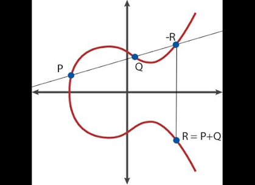
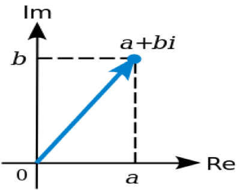
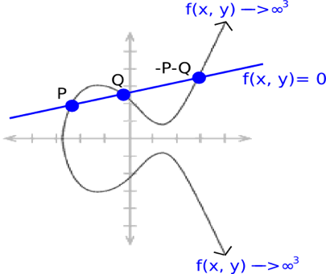

最新以太坊｜零知识证明专题系列报告（三）： 对椭圆曲线配对的探索（前方高能：一大波数学公式来袭！！）
作者：Vitalik Buterin
9 / 3 / 2017
本文将探讨各种结构（包括确定性阈值签名，zk-SNAR以及零知识证明的其它更简单形式）背后的关键密码原语的一员——椭圆曲线配对。在人们将椭圆曲线应用于包括加密和数字签名的密码应用长达30年以后，又增添了椭圆曲线配对（或“双线性映射”）这一新成员。椭圆曲线配对引入了“乘法加密”这一方式，大大扩展了基于椭圆曲线的协议的应用范畴。本文旨在详细介绍椭圆曲线配对，并就椭圆曲线配对工作原理的纲要作出解释。
不要指望第一次阅读本文就能掌握要领——这东西真的很难——哪怕看十遍也不一定能够理解。但我们希望这篇文章至少能让你——哪怕只有一点点——知道该算法是如何运作的。
想要正确理解本文，对椭圆曲线的了解是必不可少的。本文假设你大致明白它们的工作原理。但如果你什么都不懂，我推荐你先看一看这篇入门文章：https://blog.cloudflare.com/a-relatively-easy-to-understand-primer-on-elliptic-curve-cryptography/。简要总结一下，椭圆曲线密码系统涉及我们称之为“点”的数学对象（这些“点”就是我们所说的一般意义的二维点，由（x，y）坐标定义）。其中，有一套专门的公式来定义这些“点”该如何进行加减法运算（也就是计算点R = P + Q的坐标）。你也可以用一个点去乘一个整数（即 P * n = P + P+ ... + P，尽管如果n很大，会有更快的计算方法，但在本文中我们只需按照这种形式定义即可）。
点相加的直观表示如图所示
存在一个特殊点，我们称之为“无穷远点”（O）。“无穷远点”相当于点算术中的零点。P + O = P总是成立。此外，曲线也有“规则”。对任意一个点P，存在一个数字n使得P * n = 0成立（当然，P*（n + 1）= P，P *（7 * n + 5）= P *5也成立，依此类推）。还有普遍公认的“生成点”G，在某种程度上，我们可以将其理解为数字1。理论上，一条曲线上的所有点（除了O）都可以看作G。最重要的是，G是标准化的。
椭圆曲线配对之所以更先进，在于这种方法允许你检查某些与椭圆曲线点相关的更复杂的方程——举个例子，如果P = G * p，Q = G * q和R= G * r，你只需要把P，Q和R当作输入就能检查出p乘q是否等于r。这种方法也许看起来像是打破了椭圆曲线的基本安全保证，因为只知道P就有可能获取关于p的信息。但事实证明，获取p信息（信息泄露）的难度十分大——具体来说，判定性DiffieHellman问题很容易解决，但是计算性Diffie Hellman问题（知道上述例子中的P和Q，计算R = G * p * q）和离散对数问题（根据P得到p）在计算上是不可行的。
我们从第三个角度来阐述椭圆曲线配对的功能——这个用例估计是我们从事的大多数用例中最启发性的一个。如果你将椭圆曲线点视为单向加密数字（也就是说，将p加密得到P。原文：encrypt（p）= P * G = P），那么利用传统的椭圆曲线数学你只能检查数字间的线性约束关系（例如，如果P = G * p，Q = G * q以及R = G * r，那么检查5 * P + 7 * Q = 11 * R实际就是在检查5 * p + 7 * q = 11 * r），然而，通过椭圆曲线配对你能检查数字间的二次约束关系（例如，检查e（P，Q）* e（G，G * 5）= 1实则是检查p * q + 5 = 0）。当我们把计算上升到二次方程时，就可以使用确定性阈值签名，二次算术程序以及其他的好东西。
现在，我们来介绍一下上面提到的这个有趣的运算符
e（P，Q）到底是什么。它就是配对。数学家们有时也称之为双线性映射。“双线性”这个词在这里，基本上，意味着它要满足约束条件：
e（P，Q + R）= e（P，Q）* e（P，R）
e（P + S，Q）= e（P，Q）* e（S，Q）
注意，+和*可以是任意运算符。哪怕你创造出各种各样奇奇怪怪的新型数学对象，抽象代数也不会关心如何定义+和*——只要它们通常的计算规则保持一致就行。例如，a + b = b + a，（a * b）* c = a *（b * c）以及（a* c）+（b * c）=（a + b）* c。
如果P，Q，R和S都是简单的数字，那么实现简单的配对很容易：我们不妨令e（x，y）= 2^xy，然后我们可以看到：
e（3,4 + 5）= 2 ^（3 * 9）= 227
e（3,4）* e（3,5）= [2 ^（3 * 4）]*[ 2 ^（3 * 5）]= (2^ 12) * (2^ 15)=227
它是双线性的！
然而，这种简单的配对方法并不适用于密码系统，因为它们处理的对象都是简单整数，很容易被分析出来。我们可以轻而易举地分解整数，计算对数，并进行各种其他计算。简单整数没有“公钥”或者“单向函数”的概念。此外，利用上文提到的配对方法，你可以往后倒推——已知x和e（x，y），你可以简单地通过除法和对数运算来确定y。我们希望数学对象的性能尽可能类似于一个“黑盒子”——在这里面你只能够进行加，减，乘和除四种运算，除此以外，不能进行其它运算。这就是椭圆曲线和椭圆曲线配对。
事实证明，对椭圆曲线上的点进行双线性映射是可行的。也就是说，存在一个函数e（P，Q），其输入P和Q均为椭圆曲线上的点，其输出是我们称之为F_p12的域内元素（我们在这里至少会讨论它的特殊情形，但具体区分取决于曲线的细节，后续我们会继续讨论这个话题），但其背后的数学机理十分复杂。
首先，我们先来讨论素域和扩域。如果曲线方程是使用常规实数定义的，那么椭圆曲线看起来就像本文前述图片里那条漂亮的曲线那样。但是，如果我们在实际加密应用中使用常规实数，那么你可以直接使用对数算法往后倒推，我们所做的一切就没有意义了。此外，实际存储和表示数字所需的空间量可能任意增加。因此，我们使用素域内的数字。
素域是一个包含数字0,1,2 ... p-1的集合，其中，p是素数。其各种操作定义如下：
a + b：（a+ b）％p
a * b：（a* b）％p
a-b：（a-b）％p
a / b：（a* b ^（p-2））％p
一般来说，所有的数学处理都是通过模p来完成的，但除法属于特殊情况。通常而言，3/2不是整数。在这里我们只想处理整数，所以我们尝试找到x，使x * 2 = 3成立。当然，其中的*是指上述定义的乘模。多亏费马小定理，上述的取幂技巧替我们完成了这项工作。除此以外，还有更快的方法——扩展欧几里得算法。假设p = 7;这里有几个例子：
2 + 3 = 5 ％ 7 = 5
4 + 6 = 10 ％ 7 = 3
2-5 = -3 ％ 7 = 4
6 * 3 = 18 ％ 7 = 4
3/2 =（3* 2 ^ 5）％ 7 = 5
5 * 2 = 10 ％ 7 = 3
如果你也研究这类数学问题，你会发现它跟通常的算法是完全一致的。上面的最后两个例子展示了为什么（a / b）* b = a。你还可以看到（a + b）+ c = a +（b +c），（a + b）* c = a * c + b * c等所有高中代数的身影——它们依然成立。现实中，椭圆曲线上的点及其相关方程通常在素域中计算。
现在，我们来谈谈扩域。你可能以前已经见过扩域。在数学教科书中，最常见的例子就是复数域——通过在实数域中添加元素sqrt（-1）= i实现。通常情况下，所谓扩域就是在现有域的基础上，通过“发明”一个新元素并定义该元素与现有元素之间的关系（在本例中，i²+ 1 = 0）来实现。在扩域中，我们需要保证其方程不再适用于原始域中的任何数字，并着眼于原始域及新近创造的新元素的所有线性组合的集合。
我们也可以对素域进行扩展。比方说，我们可以通过添加i来扩展上述的模7素域，那么它的运算会变成：
（2 + 3i）+（4 + 2i）= 6 + 5i
（5 + 2i）+ 3 = 1 +2i
（6 + 2i）* 2 = 5 +4i
4i *（2 + i）= 3 + i
最后一个运算的结果可能让人有点摸不着头脑。它的计算步骤是这样的：首先，我们将乘积分解为4i * 2 + 4i * i，计算得8i - 4。然后因为我们使用的是模 7素域，所以最终结果变成i + 3。对于除法，我们定义如下：
a/b：（a * b^（p^2-2））％p
注意，费马小定理的指数现在是p 2而不是p。但如果我们想要更加高效，我们也可以通过扩展扩展欧几里德算法来完成这项工作。还要注意，对于该域中的任何x，x^（p2-1）= 1，因此我们将p2-1称为“该域中的乘法群阶数”。
从实数到复数，代数的基本定理保证了我们称之为复数的二次扩展是“完全”的——你不能再进一步扩展，因为你对新元素j以及现有复数所提出的任何数学关系（至少，对于由代数公式定义的任何数学关系）一定都可以找到一个复数来满足。然而，在素域中，我们没有这样的问题。因此我们可以进一步进行立方扩展（其中，新元素w和现有域元素之间的数学关系满足一个三次方程。所以1，w和w2都是彼此线性独立的），高阶扩展，甚至可以不断地对现有域进行扩展。椭圆曲线配对正是在这类增压模块化复数的基础上构建的。
如果你有兴趣了解把所有这些操作写在代码中所包含的数学方法，那么可以点击下列网址，素域及其域扩展的实现办法都在这：https：//github.com/ethereum/research/blob/master/zksnark/bn128_field_elements.py
现在，让我们重新回到椭圆曲线配对。椭圆曲线配对（或者说，我们将要在这里探讨的配对的具体形式。当然还有其他类型的配对，不过它们的逻辑都是十分相近的）就是G2*G1到Gt的映射，其中：
1, G1是一条椭圆曲线，其上的点满足形为y2=x3+ b的方程，并且x，y两个坐标参数都是F_p内的元素（也就是说，它们都是简单数，除了它们的数学运算需要对某一个素数取模）。
2, G2是一条椭圆曲线，其上的点满足与G1相同的方程，除了它们的坐标参数是F_p12内的元素（也就是说，它们是我们上面讨论的增压复数。我们定义一个新的“魔数”w，该数由一个诸如w^12 = 18 * w^6 + 82 = 0的12次多项式定义）。
3, Gt是包含椭圆曲线的结果的对象类型。基于上述曲线， Gt是F_p12内的元素（与G2所使用的增压复数相同）。
它必须满足的最主要的性质是双线性，在本例中，意味着要满足：
e（P，Q + R）= e（P，Q）* e（P，R）
e（P + Q，R）= e（P，R）* e（Q，R）
还有其它两个重要的标准：
1, 有效的可计算性（例如，我们可以通过简单地取所有点的离散对数并将它们相乘在一起来进行简单的配对，但是这在起初与破坏椭圆曲线密码系统一样难以实行，所以后来没有使用）。
2, 非简并性（当然啦，你可以只定义e（P，Q）= 1，但这并不是一个特别有用的配对）
那么我们该怎么做呢？
为什么配对函数能发挥作用呢？其背后的数学机理纷繁复杂，还涉及到相当多高等代数的内容，有的甚至超出了我们迄今为止所接触过的范畴。但我会为大家提供一个纲要。首先，我们需要定义除数的概念。除数是一种在椭圆曲线点上表示函数的替代方法。一个函数的除数一般把该函数的零点和无穷远点也计算在内。让我们通过几个例子来理解一下这到底是什么意思。我们不妨假设存在点P =（P_x，P_y），并考虑以下函数：
f（x，y）= x-P_x
除数是[P]+[-P]-2 * [O]（方括号用来表示我们所说的该函数的零点和无穷远点的集合内的某一点，而不是点P本身; [P] + [Q]跟[P +Q]不是一回事）。论证如下：
1.函数在点P等于零，因为x的值为P_x，所以x - P_x =
2.函数在点-P等于零，因为-P和P共享相同的x坐标
3.当x趋于无穷时，函数也趋于无穷。所以我们说函数在0处等于无穷。这个无穷被计算两次是有技术原因的，所以O被添加上一个值为-2的“重数（multiplicity）”(这个值之所以是负的，是因为它表示的是无穷大而不是零。又因为它被双重计数了，所以值的大小为2）。
技术原因大致如下：因为曲线方程为x3= y2+ b，所以，为了让y2跟上x 3，y趋向无穷的速度要比x“快1.5倍”。因此，如果一个线性函数只包括x，那么它会被表示为重数为2的无穷大；但是如果它包括y，那么它会被表示为重数为3的无穷大。
现在，我们来考虑一个“线函数”：
ax + by + c = 0
其中，a，b和c经过精心挑选，使得曲线能够通过点P和点Q。由椭圆曲线加法的运算原理（详情请参见本文顶部的图表）可得，这条曲线也会通过-P-Q。并且它趋近无穷的过程取决于x和y，因此除数变为[P]+[Q]+[-P-Q]-3 * [O]。
我们知道，每个“有理函数”（即仅在点坐标上使用有限数目的+， - ，*和/操作的函数）唯一地对应于一个除数，并且一方与某个常数相乘后能得到另一个函数（即，如果两个函数F和G具有相同的除数，那么存在一个特定的常数k，使得F = G * k成立）。
对于任何两个函数F和G，F * G的除数等于F的除数加上G的除数（在数学教科书中，你会看到（F * G）=（F）+（G）。因此，如果f（x，y）= P_x-x，那么（f3）= 3 * [P] + 3 * [-P]-6 * [0]。P和-P被“三重计数”，用以表明在某种数学意义上，f3在这些点会以“三倍”的速度接近0。
需要注意的是，有一个定理提到，如果从函数的除数中“移除方括号”，那么这些点加起来必须为O（[P] + [Q] + [-PQ] -3 * [O]显然符合要求，因为P+Q-P-Q-3* O=O），并且拥有这种性质的除数都是该函数的除数。
现在，我们准备谈谈Tate配对。考虑以下函数，利用它们的除数来定义：
1.（F_P）= n * [P] -n * [O]，其中n是G1的阶数。也就是说，对于任意P，n *P = 0成立。
2.（F_Q）= n * [Q] -n * [O]
3.（g）= [P + Q] - [P]- [Q] + [O]
现在，我们来看看乘积F_P * F_Q * g^n。除数是：
n * [P] -n * [O] + n * [Q] -n * [O] + n * [P + Q]
简化后得到：
n * [P + Q] -n * [O]
注意，该除数与上述F_P和F_Q的除数具有完全相同的格式。因此，F_P * F_Q * g^n= F_（P+Q）。
现在，我们引入一个被称为“最终乘幂”步骤的过程。在这个过程里，我们取上述函数（F_P，F_Q，等等）的结果，并将其提高到z=（p12-1/ n次方，其中p12- 1是F_p12中乘法群的阶数（也就说，对于任意x∈F_p12，x^（p12-1）= 1）。注意，如果对任何已经被提高到n次幂的结果应用这个指数，那么你将得到幂值为p12- 1的乘方，因此结果变为1。因此，在最终求幂之后，g^n抵消了，我们得到F_P^z * F_Q^z = F_（P+Q）^z。从中我们看到了双线性结果。
现在，如果你想在两个参数中创建一个双线性的函数，你需要进行更怪异的数学运算——你需要把F_P当成一个除数而不是直接把它当成一个值，这就是完全的“Tate配对”。为了对更多的结果实现证明，你必须了解诸如“线性等价”和“韦伊互反（Weilreciprocity）”那样的概念——兔子洞从那里开始。想要获得关于所有内容的材料，请点击这里和这里。
想要实现Tate配对的修改版本（又名“最优Ate配对”），参见这里。该代码实现了米勒算法，用来计算F_P。
需要注意的是，当我们得知能够实现这种配对时，内心是五味杂陈的。一方面，这意味着我们做的所有关于配对的协议都可以实现了；但另一方面，这也意味着我们必须对使用什么椭圆曲线更加谨慎。
每条椭圆曲线都有一个我们称之为嵌入度的值。这个值本质上是使p^k-1成为n的倍数的k的最小值（其中，p是在该域使用的素数，n是曲线的阶数）。在上述域中，k = 12，并且在用于传统椭圆曲线密码（ECC）的域中（也就是说，这时候我们不关心配对的问题）。嵌入度通常非常大，以至于配对不可能计算。然而，如果我们稍有不慎，那么我们可能会生成k = 4或者甚至k=1的域。
如果k = 1，那么椭圆曲线的“离散对数”问题（该问题实质上是要在仅知道点P = G * p的前提下推出p，也就是我们必须要解决的“破解”椭圆曲线私钥的问题）将降为与F_p类似的数学问题，这意味着问题会变得容易得多（这被称为MOV攻击）。而使用值为12或更高的嵌入度的曲线确保要么上述“难度降低”情形不会发生，要么解决关于配对结果的离散对数问题的难度至少与根据公钥“以正常方式”恢复私钥一样（计算上不可行）。不用担心，为了以防万一，所有标准曲线参数都已经被彻底检查了一遍。
请继续关注关于zk-SNARK工作原理的数学解释。
敬请期待。
特别感谢Christian Reitwiessner，Ariel Gabizon（来自Zcash）和Alfred Menezes的审查和更正。
原文来源：
https://medium.com/@VitalikButerin/exploring-elliptic-curve-pairings-c73c1864e627